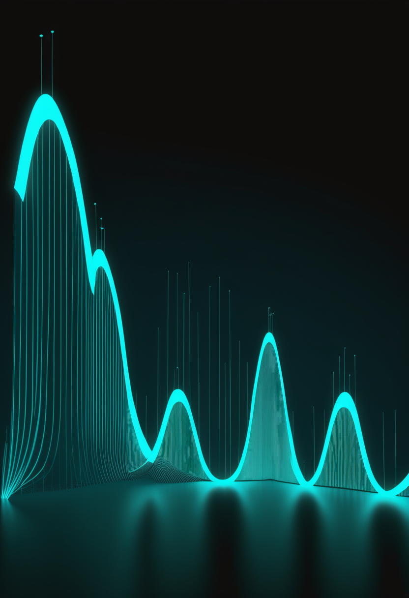
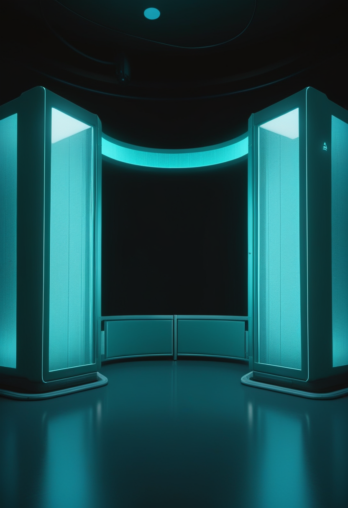
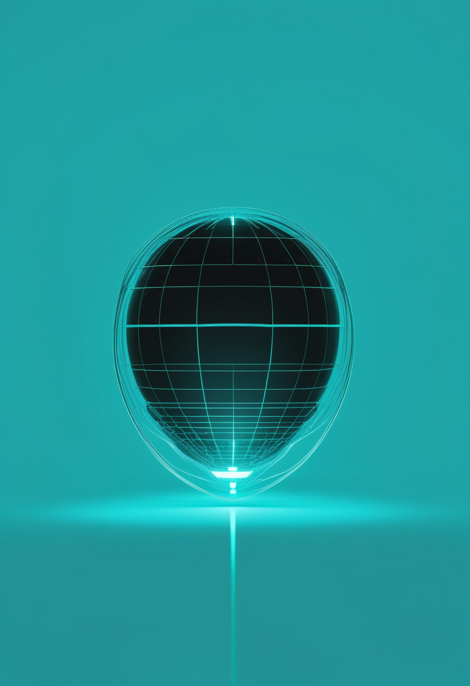
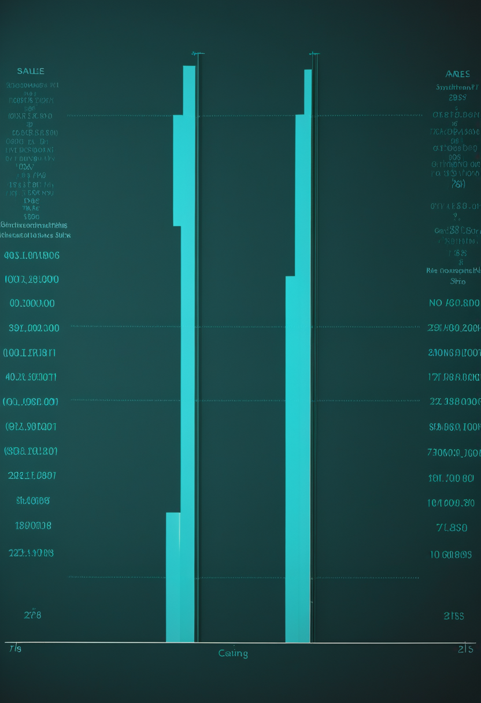
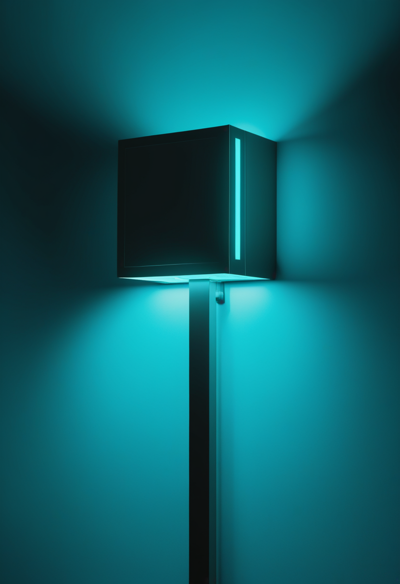
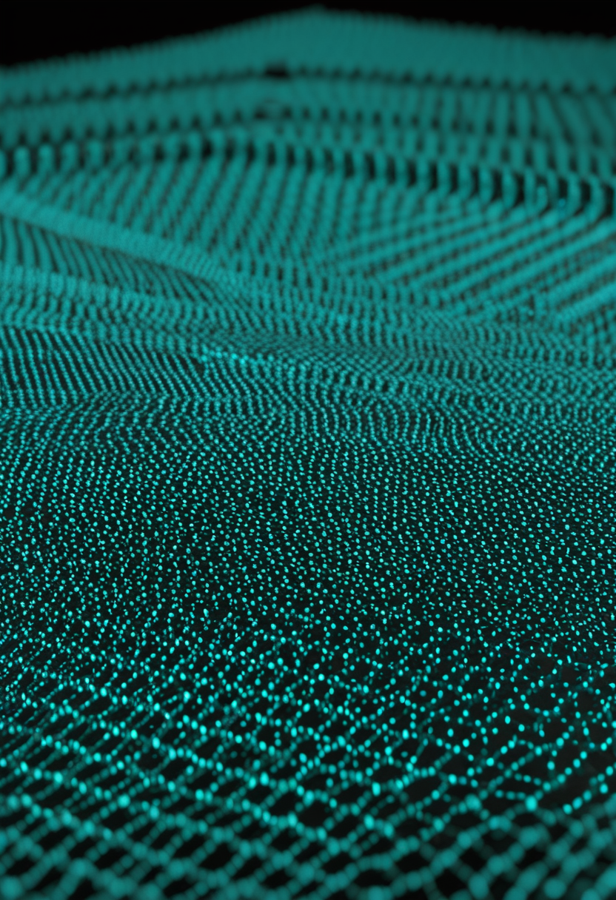

土曜日の便り。米CDCの疾病・死亡週報(MMWR)が9月15日に出した報告は、五つのエボラ流行の『最初の100日』だけを切り出して並べ、2026年のDRC流行は過去の二大流行(2014年西アフリカ・2018年DRC)のそれぞれ7倍・16倍の速さで確定例を積み上げていたと示した。一方でECDCの累計はこの3日、9月16日公表(9月15日までのデータ)のまま据え置かれ、確定7,404例・死亡3,577人。命の章では、SMA治療薬ISEMBYLDの根拠となった第3相SAPPHIRE試験のLancet Neurology正式掲載分から、4点以上の改善という一段厳しい基準の内訳が判明したこと、スコットランドが発症前SMAへのヌシネルセン給付を認めたこと、世界の新生児スクリーニング普及率が約7%にとどまることを伝える。自由の章では、Precision Neuroscienceが6施設で30日間の延長留置研究を始めたこと、視線制御の技術が医療から娯楽へ出てまた医療へ戻ってきた歴史を報じる。基盤の章では、MMWRの『最初の100日』分析に加え、ECDCの数字が3日動かない裏で判明した二つの新しい割合、そして国境なき医師団の『制御下と考えるのは誤り』という現場からの警告を伝える。畏敬の章では、ブラックホールが大きさによらず同じ臨界点でジェットを噴き出すという普遍則、30年で6倍明るくなった『生まれ変わりの星』、そして15万個の物理量子ビットで1,000個の論理量子ビットを支える誤り訂正の実証を紹介する。美の章では、MITマクガヴァン脳研究所が『できるか』と『すべきか』を並べて論じた記事の続き、そして人のデジタルツインが五つの形に系統的に歪むという研究を取り上げる。
9月15日、米CDCの疾病・死亡週報(MMWR)に『五つのエボラ流行の最初の100日』という報告が載った。並べられたのは2026年のDRC流行と、過去最大の2014年西アフリカ、2018年DRC、そしてブンディブギョ型による過去2件(2007年ウガンダ・2012年DRC)。流行確認から最初の100日を切り出すと、2026年の流行は過去のどの流行よりも速く伸び、確定例は過去の二大流行のそれぞれ7倍・16倍だった(どちらが7倍でどちらが16倍かは出典からは特定できない、要確認)。9/17号(No.085)ではWHOの9月14日付疾病流行情報(9月13日までのデータ)で確定7,258例・死亡3,510人と報じたが、ECDCが9月16日に公表した集計(9月15日までのデータ)はそれから+146例・+67人進んで確定7,404例・死亡3,577人(致死率約48.3%)・回復1,776人。この3日、ECDCの数字自体は動いていない。流行の大きさは最終的に足し算で決まるが、対応が間に合うかどうかは傾きで決まる。規模ではなく速度を測る物差しが、新しく加わった。
9/13号(No.081)は、FDAが承認したISEMBYLDの根拠である第3相SAPPHIRE試験について、188人を対象にHFMSEが対照より2.2点改善(3点以上改善34.2%対13.5%)したことを報じた。Lancet Neurology正式掲載分には、より厳しい基準の内訳が加わっている。4点以上の改善に達した人の割合は、投与群19.6%に対しプラセボ群6.3%。平均が2.2点動いたというより、はっきり良くなる人の割合が2倍から3倍になった、と読むほうが近い。投与は10 mg/kgの月1回点滴。なお主要有効性集団の人数は、出典によって103人と156人が併記されており一致しない(要確認)。

スクリーニングを始めることと、見つかった子に薬を出せることは別の手続きである。スコットランド医薬品コンソーシアム(SMC)は、ヌシネルセン(スピンラザ)を発症前SMAに対するNHSスコットランドでの限定使用として受け入れた。背景にあるのは同国で新生児スクリーニングが定常的に導入されたことで、見つかる子が増えれば症状が出る前の治療の適応が必要になる。順序としては、見つける仕組みが先に動き、支払いの仕組みが後から合わせにいった形になる。イングランドは2026年10月から新生児の約72%を対象に実施下評価として検査を始め、2027年10月に全域へ広げる予定で、同じ英国のなかで検査と給付の噛み合わせ方が地域ごとに違う段階にある。
世界でSMAの新生児スクリーニングを受けている新生児は、全体のおよそ7%にとどまるという研究がある。残りの93%は症状が出てから見つかることになる。日本の現在地は具体的に追える。治療薬はヌシネルセン(2017年8月)、オナセムノゲン アベパルボベク(2020年5月)、リスジプラム(2021年8月)と早く揃った一方、検査のほうは自治体単位から始まった。熊本県の事業は2021年2月に開始し、2022年1月までに13,587人の新生児が生後4〜6日で検査を受けている。薬が国内にあることと、薬に間に合うように見つかることのあいだには、この7%という隔たりがある(同研究の正確な公表時期は本号では確認できず、要確認)。
3本を並べると、いま最も差が大きいのは薬ではなく検査であることが見える。承認薬の一覧は国際的にかなり似通ってきたのに対し、生まれた場所によって検査を受けられる確率は7%(世界)と72%(イングランド、来月)と100%(米国・日本の制度上)に分かれる。スコットランドは給付の仕組みを検査の後追いで整えたが、世界の大半はまだ検査そのものが無い。家族にとっての不平等は、もはや薬の有無ではなく、間に合うかどうかの側に移っている。

9/15号(No.083)は、Precision NeuroscienceのLayer 7 Cortical InterfaceがFDAの510(k)クリアランスを得て、最長30日間の一時留置が認められた無線BCIとして初のクリアランスになったことを報じた。その先が動いている。同社は6か所の医療機関で延長留置の研究を始めた。脳神経外科手術から回復しつつある患者が、最長30日にわたって装置を使いBCIの課題に取り組む。電極を脳の内部に刺し込まずに思考だけで電子機器を操作できる点が特徴である。資金の側も動き、BCI分野への投資は2026年だけで10億ドルを超えた ― 直前4年間の合計15.6億ドルと比べるべき数字で、1年で4年分の3分の2に届いた計算になる。
視線入力の歴史を一続きの線として書いた総説がある。題は『視線制御の急速な発展 ― 医療用補助具から仮想現実のガジェットへ、そしてまた戻る』。出発点は重度の運動障害がある人のための意思疎通手段だった。そこから市場が広がり、ゲームやXR(拡張現実)の入力装置として大量に作られるようになり、部品が安く高性能になった。その成果がふたたび医療の側へ戻ってくる、という往復の構図である。実際、Tobii Dynavoxは明るい日射しの下でも使える屋外対応の視線入力を意思疎通装置として実現しており、同社はこれを業界初と説明する。室内の据え置き型から屋外へ出ることは、使える場所が増えるという以上の意味を持つ。
2本は『施設数』と『場所』という具体で語られる。Precisionは6施設・30日という数字に落ち、投資は1年で10億ドルという桁で動く。視線制御は、医療から娯楽へ出て戻るという往復で部品が安くなり、いまは屋外でも使える段階まで来た。どちらも『将来できること』ではなく『いま何件・どこで動いているか』で語られている。
9月15日、米CDCの疾病・死亡週報(MMWR)に『五つのエボラ流行の最初の100日』と題する報告が載った。並べられたのは2026年のDRC流行のほか、過去最大の2014年西アフリカ、2018年DRC、そしてブンディブギョ型による過去2件、すなわち2007年ウガンダと2012年DRCである。流行が確認されてからの最初の100日は、伝播の力学や初期の公衆衛生介入の効き方を見るうえで重要な期間とされる。その100日を切り出すと、2026年の流行は過去のどの流行よりも速く伸びていた。確定例は過去の二大流行のそれぞれ7倍と16倍である。先立つ9月1日の早期公表分では、8月21日時点で確定5,458例・死亡2,606人、致死率およそ48%と報告されている。なお7倍・16倍がそれぞれどちらの流行に対応するかは、出典からは特定できない(要確認)。

9/17号(No.085)ではWHOの9月14日付疾病流行情報(9月13日までのデータ)で確定7,258例・死亡3,510人・6州61保健区と報じた。ECDCが9月16日に公表した集計(9月15日までのデータ)は、確定7,404例・死亡3,577人(致死率48.3%)・回復1,776人 ― 2日分として+146例・+67人にあたる。新規の内訳はイトゥリ35例、北キブ21例、バ・ウエレ2例、チョポ1例。ここに新しい二つの割合が加わった。隔離入院中の患者は930人、把握された接触者のうち追跡下にある割合は87.4%である。この追跡率は、WHOの疾病流行情報が示す78.6%、DRC保健当局の88%と一致しない。三つの機関が三つの値を出している。輸入例も記録が残り、2026年5月に米国市民1人がドイツへ医療搬送、6月24日にフランスで1例が報告された。ECDCはEU/EEAへの輸入リスクを依然として『非常に低い』としている。

数の話の隣に、受け止める側の話を置く。国境なき医師団(MSF)はDRCの5州で9か所のエボラ治療センターを運営し、600人を超えるスタッフが保健省の部隊とともに対応にあたっている。5月以降に受け入れた患者は2,770人を超え、そのうち1,000人超が確定例、400人超が回復して退院した。ゴマ市には80床の治療センターとキエシェロ病院の隔離病棟、イトゥリ州ブニアにはエリキア病院センター、さらにベニとブテンボにも治療センターがある。同団体の警告は率直である。この流行が制御下にあると考えるのは誤りだ、と。累計値が数日動かないことと伝播が止まったことは同じではない。なお流行の規模順位は、MSFが『史上3番目』、WHOが8月2日時点で『史上2番目』としており、基準時点が異なるため本号では確定しない(要確認)。
3本は同じ流行を、速度・割合・容量という三つの単位で測っている。MMWRは傾きを測り、ECDCは追跡率という『取りこぼしの少なさ』を測り、MSFは病床と人員という『受け止められる量』を測る。累計値が3日動かないとき、それを『落ち着いた』と読むか『報告が追いついていない』と読むかは、累計値そのものからは決まらない。接触者追跡率が三つの機関で78.6%・87.4%・88%と割れている事実のほうが、いま何が見えていないかをよく示す。
9月17日、Nature Astronomyに『ブラックホールのジェット形成における普遍的な臨界降着率』と題する論文が載った。著者はプリンストン高等研究所のAndrew Mummery氏と、西オーストラリア州カーティン大学の国際電波天文学研究センター(ICRAR)のAdelle Goodwin氏である。主張は簡潔で、ブラックホールは太陽の約10倍の質量であっても、その数百万倍であっても、餌を食べる周期の同じ臨界点で強力なジェットを噴き出す、というものだ。使ったのは潮汐破壊現象、つまり恒星が超大質量ブラックホールの重力で引き裂かれる出来事である。可視光・紫外線・X線・電波で20件を調べ、降着率と電波の吹き出しの時刻をどちらも信頼して模型化できる10件に絞り込んだ。恒星質量のブラックホールで知られていた規則が、質量にして数十万倍の相手にもそのまま当てはまる。
恒星の進化は普通、人間の一生では追えない。9月16日にMonthly Notices of the Royal Astronomical Societyに載った研究が扱うのは、その例外である。『櫻井天体(Sakurai's Object)』は、1996年に日本のアマチュア天文家・櫻井幸雄氏が発見した星で、超晩期熱パルスによって白色矮星から再点火した『生まれ変わりの星』である。この30年で6倍明るくなり、いま炭素とヘリウムに富むウォルフ・ライエ型に特徴的な強い恒星風をまとい始めた。表面温度は27,000〜36,000 K。観測にはヨーロッパ南天天文台の超大型望遠鏡(VLT)が使われ、著者はリオデジャネイロのバロンゴ天文台のW. Marcolino氏。興味深いのは、再加熱の進み方が一部の模型の予測より遅い点である。数百万年の尺度で語られてきた過程が、数十年の尺度で目の前を通り過ぎている。

量子では9月14日、Iceberg QuantumとDiraqが、IcebergのPinnacleというqLDPC(量子低密度パリティ検査符号)方式の誤り訂正構成を、Diraqのシリコンスピン量子ビット素子の上でコンパイルし検証したと発表した。仲介したのはNVIDIAのCUDA-Q Logicalである。要点は配線にある。高効率なqLDPC符号は本来、離れた量子ビット同士を結ぶ大がかりな配線を必要とするが、今回は電子を物理的に移送(シャトリング)して局所的に経路を作ることで、それを避けた。結果として、物理量子ビット15万個で論理量子ビット1,000個を支えられるという。Pinnacleの論文が示した物理量子ビット数は、Diraqの実機を前提とした見積もりと5%以内で一致した。移送に伴う雑音を入れた数値模擬でも、実用に足る論理性能が確認されたとしている。
3本はいずれも『規則が思ったより広く当てはまる』という形をしている。ジェットの臨界点は質量が5桁違っても同じで、生まれ変わりの星は数百万年の過程を数十年で見せ、qLDPC符号は超伝導以外の方式にも載った。潮汐破壊現象20件から10件への絞り込み、30年で6倍・27,000〜36,000 K、15万個で1,000個と誤差5%以内。普遍性の主張は、数が細かいほど検証しやすい。
9/13号(No.081)は、MITマクガヴァン脳研究所が9月2日に公開した記事について、意識のアップロードを技術的な壁と哲学的な難問の両面から論じたことを報じた。同じ記事に載っていた別の研究者の見積もりが、より具体的な時間の尺度を示している。ショウジョウバエの脳の配線図を作るのに数百人の科学者と6年を要した。マウスで同じことをするには、さらに10年から15年かかると見られている。人間の脳は数百億の神経細胞と100兆を超える接続点を持ち、全脳エミュレーションはその全部の回路を地図にし、それぞれの働きを理解することを求める。倫理の側からの整理も進んでおり、arXivの論文『認知デジタルツイン ― 心をモデル化するAIシステムの倫理的リスクと統治』は、心のモデルを作る技術そのものを統治の対象として扱う枠組みを論じる。似せられるようになる前に問うべきことがある。
Science Advancesに載った研究は、大規模言語モデルで個人を模した『デジタルツイン』を、19件の事前登録研究・164のアウトカムで実際の人間と突き合わせた。ツインは、その人自身が過去に答えた500問以上の回答で訓練されている。結果は、大量の個人データで訓練したツインでも、汎用モデルと比べて人間の選択をわずかにしか良く予測できない、というものだった。著者らの表現は容赦がない。今日のデジタルツインは、人間の行動を組織的に歪ませる『びっくりハウスの鏡』と呼ぶのが最もふさわしい、と。歪みは五つに整理された ― 個別化の不足、ステレオタイプ化、代表性の偏り、イデオロギーの偏り、そして過剰な合理性である。実在の人間より、迷わず、ばらつかず、賢く答えてしまう。調査の代役にも、実験の被験者にも、意思決定の委任先にも向かないと結論している。
2本は『まだできていない』を具体的な数で言っている。ハエの配線図に6年、マウスにあと10〜15年、人格の粗いコピーはすでに五つの方向へ系統的に歪む。似せる作業の上限が測定と検証の速さにあるのだとすれば、デジタル化という語がこれまで運んできた高揚は、こうした数字に置き換えられつつある。似せられるようになる前に、何を守るかを決める時間はまだ残っている。
土曜日の便り。米CDCの疾病・死亡週報(MMWR)が9月15日に出した報告は、五つのエボラ流行の『最初の100日』だけを切り出して並べ、2026年のDRC流行が過去の二大流行のそれぞれ7倍・16倍の速さで確定例を積み上げていたと示した。ECDCの累計はこの3日、9月16日公表(9月15日までのデータ)のまま確定7,404例・死亡3,577人で据え置かれている。命の章では、SAPPHIRE試験のLancet Neurology正式掲載分から4点以上改善という一段厳しい基準の内訳が判明したこと、スコットランドが発症前SMAへのヌシネルセン給付を認めたこと、世界の新生児スクリーニング普及率が約7%にとどまることを伝えた。自由の章では、Precision Neuroscienceが6施設で30日間の延長留置研究を始めたこと、視線制御の技術が医療から娯楽へ出てまた医療へ戻ってきた歴史を報じた。基盤の章では、MMWRの『最初の100日』分析に加え、ECDCの数字の裏で判明した隔離930人・追跡率87.4%という二つの割合、そして国境なき医師団の『制御下と考えるのは誤り』という現場からの警告を伝えた。畏敬の章では、ブラックホールが大きさによらず同じ臨界点でジェットを噴き出すという普遍則、30年で6倍明るくなった『生まれ変わりの星』、そして15万個の物理量子ビットで1,000個の論理量子ビットを支える誤り訂正の実証を紹介した。美の章では、MITマクガヴァン脳研究所の記事の続きとして判明したハエ6年・マウス10〜15年という具体的な時間規模、そして人のデジタルツインが五つの形に系統的に歪むという研究を取り上げた。
では、また明日の朝に。 — JaH